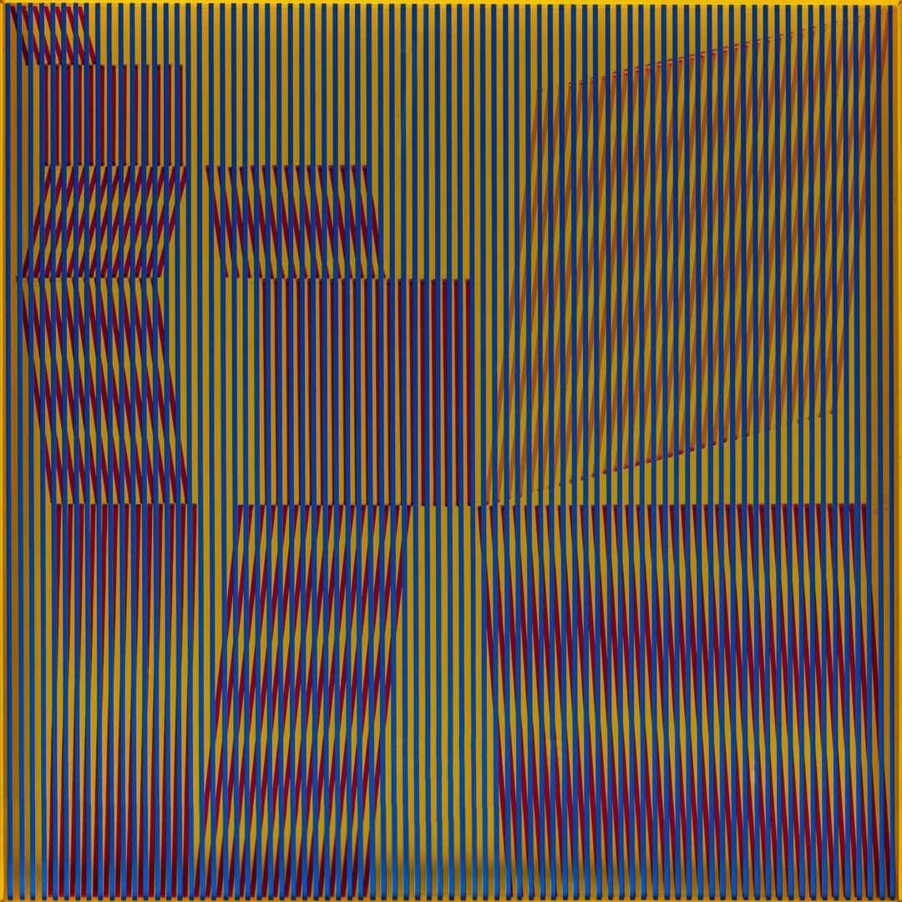
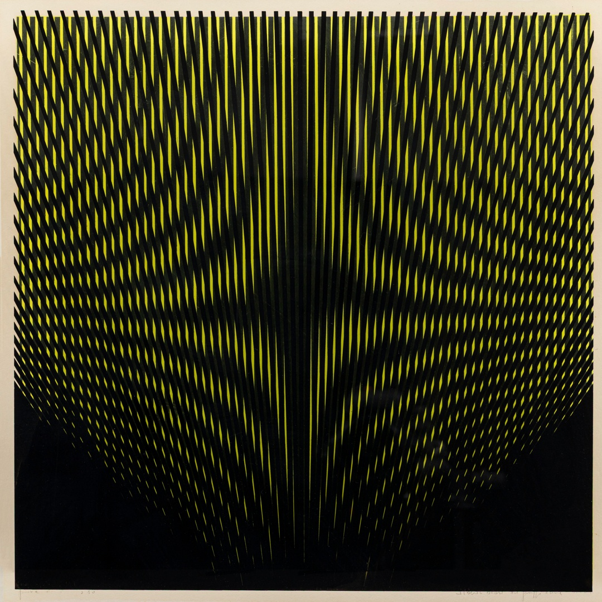

Alberto Biasi rappresenta uno degli artisti più interessanti e collegati a stretto giro con il gruppo N padovano. Nato nel giugno del 1937 a Padova, Biasi ha avuto un ruolo determinante nello sviluppo di un linguaggio artistico innovativo che esplora l’interazione tra l’opera e lo spettatore. Dopo la Seconda Guerra Mondiale, Biasi frequenta il liceo a Padova, per poi iscriversi alla Facoltà di Architettura di Venezia, dove sviluppa un interesse particolare per la percezione visiva, e al Corso Superiore di Disegno Industriale. Conclusi gli studi, nel 1958 inizia a insegnare disegno e storia dell’arte nella scuola pubblica. Il suo esordio artistico risale al 1959, anno in cui vince il Primo Premio per il bianco e nero alla IV Triveneta Giovanile d’Arte di Cittadella. Nel 1960 espone a Milano, Padova e Roma insieme a Piero Manzoni, Enrico Castellani e altri artisti europei della “Nuova concezione”. Tra i fondatori del Gruppo N, aderisce al movimento delle Nuove Tendenze e partecipa, tra il 1960 e il 1964, a numerose esposizioni in Italia e all’estero. Il gruppo nasce creando e producendo opere non firmate, fondamentalmente come collettivo creativo. Tuttavia, il gruppo si dissolve tra il 1964 e 1965 e da quel momento ogni membro intraprende un percorso individuale. Dopo la fine dell’esperienza collettiva, Biasi prosegue autonomamente la sua ricerca, riprendendo e sviluppando con coerenza i risultati ottenuti, cercando nuove soluzioni formali. La sua produzione artistica si concentra sull’esplorazione percettiva, realizzando opere che si focalizzano sulla percezione visiva e sull’interazione con l’osservatore. Alberto Biasi ha creato opere che esplorano la dinamica visiva, un concetto che si sviluppa attraverso il movimento e l’interazione tra lo spettatore e l’opera stessa. Biasi ha voluto dimostrare che l’arte non è solo statica, ma può essere un’esperienza in cui la percezione dell’osservatore è fondamentale per la sua realizzazione. Le sue opere si caratterizzano per l’uso di forme geometriche, colori vivaci e l’integrazione di elementi cinetici, che rendono l’arte in costante mutamento. In particolare, i suoi lavori riflettono l’interazione tra la staticità dell’oggetto e il dinamismo della percezione, facendo leva sulla luce, il movimento e la trasformazione visiva. I suoi capolavori più noti, come le “Serie Ottiche”, si basano sull’uso di forme ripetitive e schermi o strutture che, al variare della posizione dello spettatore, creano effetti ottici e di movimento, giocando sulla distorsione visiva.


La “dinamica visiva” in questo contesto è il principio che anima le sue creazioni, ovvero l’idea che l’immagine non sia mai fissa, ma viva, in costante trasformazione a seconda di come la si osserva. Un esempio emblematico è la sua celebre superficie a griglie, in cui la combinazione di linee parallele e incrociate, unite a sfumature di colore, genera l’illusione del movimento quando l’osservatore si sposta. Biasi, dunque, con le sue opere, invita a una fruizione attiva e partecipativa, trasformando ogni visione in un’esperienza unica e irripetibile, capace di coinvolgere lo spettatore sia a livello sensoriale che cognitivo. L’autore, come tutto il gruppo N, utilizza una tecnica innovativa che impiega delle strisce di nastro chiamate Letralite. Questo nastro viene applicato su diverse lastre di plexiglass, posizionate a distanze variabili. La disposizione delle lastre e il modo in cui il Letralite viene applicato, generano un effetto percezione di movimento visivo, noto come effetto “Phi” in psicologia della percezione. Questo effetto crea l’illusione percettiva di un movimento continuo, sfruttando le differenze di spaziatura tra le lastre e la luce proiettata.